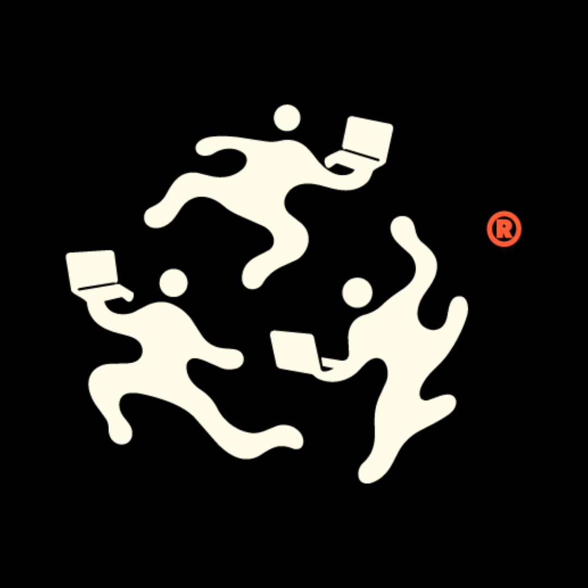
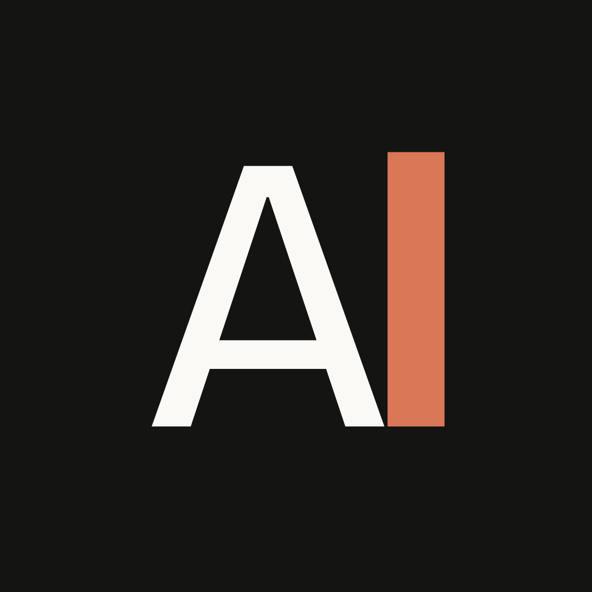
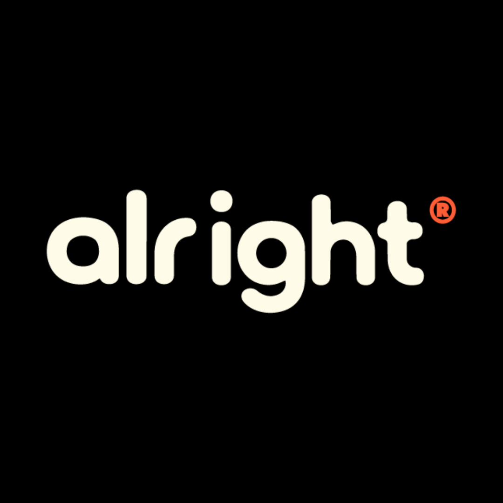

Alright
Sistema visual de presença no Instagram — avatar de perfil, capas de Feed (formato dominante 1080×1350, 4:5) e capas verticais para Reels/Stories (1080×1920). Tudo construído sobre as decisões já cravadas: Bricolage Grotesque, paleta Bone / Dark / Kodak Red, brand device (( )). Cada template é renderizado abaixo em escala reduzida; o markup interno está em resolução nativa, o que permite exportação direta para PNG via Playwright.
01 / Avatar
Foto de perfil
Instagram corta o avatar em círculo (≈ 75% do quadrado). As três variantes abaixo testam diferentes níveis de escala — passe o mouse sobre cada peça para simular o crop circular.
A · 1080 × 1080
Símbolo
Brasa
Ember Kodak Red + halo radial + 3 wisps de fumaça Bone que cruzam no meio — frozen frame do motion ((Brasa)). Símbolo puro pra reconhecimento em scale pequena.
B · 1080 × 1080
Brasa lockup
Brasa + Alright
Símbolo Brasa em cima + wordmark Alright abaixo com l Bold 700 (mono Bone, sem accent vermelho). Reveal moment do motion congelado em forma de logo.
Alright
C · 1080 × 1080
Wordmark
Alright
Logo Default completo sobre Dark. Reconhecimento total (palavra inteira) ao custo de menor escala efetiva no círculo do perfil.
Teste · escala real
Como cada opção aparece nos contextos do Instagram
Cada coluna reproduz o diâmetro real (em CSS pixels) em que o Instagram exibe o avatar no respectivo contexto. Crop circular aplicado como na app. Compare lendo cada linha.
32 px
Comentários
Post no feed
Post no feed
44 px
DMs
Busca / sugestões
Busca / sugestões
56 px
Stories ring
no feed
no feed
110 px
Header
do perfil
do perfil
A
((l))
((l))
B
Al
Al

C
Alright
Alright

02 / Feed
Capas de post
Formato 4:5 retrato (1080×1350), dominante no Instagram desde 2020. Seis templates cobrem os contextos editoriais previstos: case, manifesto, big idea, making-of, citação e anúncio. Tipografia Bricolage Grotesque; accent Kodak Red sempre ≤ 10% da peça.
Case · 2026
Olympikus
Olympikus
N.07
Corre.
Filme sem
câmera.
Filme sem
câmera.
Alright
01 · 1080 × 1350
Capa · Case
Anuncia um trabalho. Eyebrow cliente · ano + index; título grande; wordmark + meta no rodapé.
Manifesto · 01
(( ))
Craft.
Craft.
And. More.
Craft.
Craft.
And. More.
Craft.
Alright
2026 · São Paulo
02 · 1080 × 1350
Capa · Manifesto
Bandeira canônica sobre Dark. Texto-protagonista; nada além dele. Use para frases canon:
Craft. Craft. And. More. Craft., Cada filme é um filme., No camera or set.
Alright · Big idea
EP · 03
((Look
again.))
again.))
Alright
A.I. first
Production Co.
Production Co.
03 · 1080 × 1350
Capa · Big idea
Big idea cravada (
((Look again.))) com brackets Kodak Red como heroes. Para abrir séries ou marcar reveals.
Making-of · PUMA
FRAME 048 / 240
Take 12 · interior · 16:9
Sem câmera. Sem set.
Só craft.
Só craft.
Alright
04 · 1080 × 1350
Capa · Making-of
Frame still 16:9 (placeholder warm gradient — substituir por still real do projeto) + título embaixo. Padrão para abrir carrosséis de bastidores.
Pensamento · 04
(( ))
Não filmamos.
Imaginamos.
Imaginamos.
Diário Alright · 2026
Alright
05 · 1080 × 1350
Capa · Pensamento
Citação editorial autoral. Uma palavra em Kodak Red como ênfase (proporção ≤10%). Atribuição em mono caps.
Novo · 2026
Chupa
Chups
((Forever
Fun))
Chups
((Forever
Fun))
Quatro filmes. Um universo. Zero câmeras.
Alright
06 · 1080 × 1350
Capa · Anúncio split
Composição split Bone/Dark 62/38 para anúncios de lançamento, com lead em Bone sobre Dark + CTA. Funciona como capa standalone ou cover de carrossel.
03 / Vertical
Reels & Stories
Formato 9:16 vertical (1080×1920). Safe-zone superior ≈ 280 px (header app) e inferior ≈ 320–340 px (UI nativa + label). Conteúdo crítico no centro 1080×1320.
Making-of · Olympikus
Reel · 60s
((Corre 5))
07 · 1080 × 1920
Reels cover · editorial
Padrão para capa de Reels. Brackets enquadram o título; still warm gradient embaixo (placeholder); wordmark centralizado no rodapé respeitando safe-zone.
Alright
2026
05 · 15
05 · 15
Case
novo.
novo.
PUMA Portugal — filme institucional sem câmera, sem set, sem custo alto.
Arraste →
↗
08 · 1080 × 1920
Stories · swipe
Template para Stories. Dark background (a marca respira em dark no efêmero); headline + lead + CTA. Wordmark top-left, índice mono top-right.